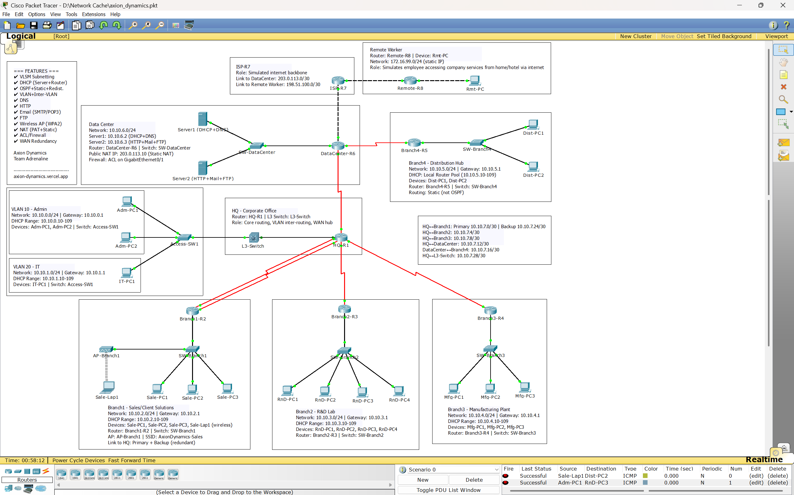

Axion Dynamics — Enterprise Network Documentation
This document records the design and build of Axion Dynamics' internal network — a seven-site enterprise topology covering Head Office, four branch operations, a central Data Center, and a simulated internet edge with a remote worker. Every subnet, cable run, and configuration line below reflects what was actually built and tested in Packet Tracer, including the routing and NAT/ACL issues that came up mid-build and how each was resolved.
01Company Profile
Business context behind the design decisions — every VLAN, routing choice and DHCP method below traces back to something in this table.
| Division | Function | Network role |
|---|---|---|
| Head Office | Corporate admin & IT governance | Core router + L3 switch, VLAN segmentation, WAN hub |
| Client Solutions (Branch 1) | Sales, live product demos | Wireless AP for staff moving around during demos |
| R&D Lab (Branch 2) | AI-robotics design & simulation | Standard branch LAN, largest PC count |
| Manufacturing Plant (Branch 3) | Assembly, on-floor testing | Standard branch LAN |
| Distribution Hub (Branch 4) | Logistics, outbound shipment tracking | Independent local DHCP + static routing (WAN-outage resilient) |
| Data Center | Core infrastructure | DHCP, DNS, HTTP, Mail, FTP; NAT and ACL boundary |
| Remote Worker | Off-site employee | Simulated internet client, static IP on a home-network subnet |
02Team & Instructor
| Name | ID |
|---|---|
| Atkia Galiba Rifah | 241-15-076 |
| Md. Shaid Hasan | 241-15-360 |
| Md. Fazle Rabbi | 241-15-364 |
| Md. Afsahul Arefin Talukder | 241-15-377 |
| Sormili Akter Nowshin | 241-15-404 |
| Instructor | Mr. Tanvirul Islam |
| Designation | Lecturer |
| Department | CSE |
| Faculty | Science and Information Technology |
03Architecture
Hub-and-spoke with two hubs: HQ for the office branches, Data Center for Distribution and the internet edge.
HQ-R1 is the primary hub for Branch1–3. Data Center-R6 acts as a secondary hub for Branch4 and carries all internet-facing traffic — this keeps user-office traffic and server-facing traffic on physically separate paths. Inter-VLAN routing at HQ is handled by a Layer 3 switch rather than the router itself, which avoids the single-trunk bottleneck of a router-on-a-stick setup once you're past two or three VLANs.
Why this shape and not a flat network
| Problem with a flat network | How this design avoids it |
|---|---|
| One compromised device exposes everything | Server Farm isolated in its own subnet behind an ACL |
| Broadcast domain grows unmanageable | VLAN10/20 at HQ, separate /24 per branch |
| Single point of failure on the only WAN link | Dual serial link HQ↔Branch1 (primary + backup) |
| Branch outage kills local operations too | Branch4 runs local DHCP independent of Data Center |
04Topology Diagram
+-----------+ +------------+ +--------+
| ISP-R7 |----------| Remote-R8 |-------| Rmt-PC |
+-----+-----+ +------------+ +--------+
| 203.0.113.0/30 198.51.100.0/30
| NAT (PAT+Static) + ACL
+------+---------+
| DataCenter-R6 |----Static routing---+
| Server1 .6.2 | |
| Server2 .6.3 | +------+------+
| NAT pub .10 | | Branch4-R5 |
+------+---------+ | Dist. Hub |
| | local DHCP |
+------+---------+ +-------------+
| HQ-R1 |
| L3-Switch |
| VLAN10 / VLAN20|
+--+------+----+-+
________/ | \________
/ | \
+-------+-----+ +------+------+ +----+--------+
| Branch1-R2 | | Branch2-R3 | | Branch3-R4 |
| Sales + AP | | R&D Lab | | Mfg. Plant |
| dual link | +-------------+ +-------------+
+-------------+
Rendered as ASCII for portability. The annotated version with per-site IP/DHCP labels lives in the .pkt file canvas as in-place text notes — the actual canvas is captured below.
Live canvas capture
Full topology as built in Packet Tracer, including the in-canvas notes for every site, VLAN, and WAN link, plus the feature checklist box (top-left). Click to view full size.

Click to expand05IP Addressing Plan (VLSM)
Base block 10.10.0.0/16. LAN subnets sized /24 for growth headroom; point-to-point WAN links sized /30 for an exact fit — the actual demonstration of VLSM, since a flat /24 everywhere would waste 252 addresses on every two-router link.
LAN subnets
| Site / VLAN | Network | Gateway | Usable range | DHCP pool | Method |
|---|---|---|---|---|---|
| HQ – VLAN 10 (Admin) | 10.10.0.0/24 | 10.10.0.1 | .2–.254 | .10–.109 | helper-address |
| HQ – VLAN 20 (IT) | 10.10.1.0/24 | 10.10.1.1 | .2–.254 | .10–.109 | helper-address |
| Branch1 – Sales | 10.10.2.0/24 | 10.10.2.1 | .2–.254 | .10–.109 | helper-address |
| Branch2 – R&D | 10.10.3.0/24 | 10.10.3.1 | .2–.254 | .10–.109 | helper-address |
| Branch3 – Manufacturing | 10.10.4.0/24 | 10.10.4.1 | .2–.254 | .10–.109 | helper-address |
| Branch4 – Distribution | 10.10.5.0/24 | 10.10.5.1 | .2–.254 | .10–.109 | local pool |
| Data Center | 10.10.6.0/24 | 10.10.6.1 | .2–.254 | — | static only |
WAN / transit links (/30)
| Link | Network | Endpoint A | Endpoint B | Routing |
|---|---|---|---|---|
| HQ ↔ Branch1 (primary) | 10.10.7.0/30 | HQ-R1 .1 | Branch1-R2 .2 | OSPF cost 64 |
| HQ ↔ Branch1 (backup) | 10.10.7.24/30 | HQ-R1 .25 | Branch1-R2 .26 | OSPF cost 100 |
| HQ ↔ Branch2 | 10.10.7.4/30 | HQ-R1 .5 | Branch2-R3 .6 | OSPF |
| HQ ↔ Branch3 | 10.10.7.8/30 | HQ-R1 .9 | Branch3-R4 .10 | OSPF |
| HQ ↔ Data Center | 10.10.7.12/30 | HQ-R1 .13 | DataCenter-R6 .14 | OSPF |
| Data Center ↔ Branch4 | 10.10.7.16/30 | DataCenter-R6 .17 | Branch4-R5 .18 | Static + redistribute |
| HQ ↔ L3-Switch (transit) | 10.10.7.28/30 | HQ-R1 .29 | L3-Switch .30 | OSPF |
External / ISP zone
| Segment | Network | Note |
|---|---|---|
| ISP ↔ Data Center | 203.0.113.0/30 | RFC 5737 documentation range |
| ISP ↔ Remote Worker | 198.51.100.0/30 | RFC 5737 documentation range |
| Remote Worker LAN | 172.16.99.0/24 | Static IP, classful mask kept per lab convention |
| Static NAT public IP | 203.0.113.10 | Maps to Server2 (10.10.6.3) |
06Device Inventory
Devices by type
End hosts per site
Router model usage
Full device list
| Device | Model | Site | Role |
|---|---|---|---|
| HQ-R1 | Cisco 2911 | HQ | Core router, WAN hub (6 interfaces: 1 Gig, 5 Serial via 3× HWIC-2T) |
| L3-Switch | Cisco 3560-24PS | HQ | Inter-VLAN routing (VLAN10/20 SVIs) |
| Access-SW1 | Cisco 2960-24TT | HQ | Access layer, trunk to L3-Switch |
| Branch1-R2 | Cisco 2911 | Branch1 | Dual-homed to HQ (primary + backup serial) |
| SW-Branch1 | Cisco 2960-24TT | Branch1 | LAN switch + AP uplink |
| AP-Branch1 | Cisco AP-PT | Branch1 | WPA2-PSK wireless, SSID AxionDynamics-Sales |
| Branch2-R3 | Cisco 2911 | Branch2 | Standard branch router (1 HWIC-2T) |
| SW-Branch2 | Cisco 2960-24TT | Branch2 | LAN switch |
| Branch3-R4 | Cisco 2911 | Branch3 | Standard branch router (1 HWIC-2T) |
| SW-Branch3 | Cisco 2960-24TT | Branch3 | LAN switch |
| Branch4-R5 | Cisco 2911 | Branch4 | Static routing, local DHCP pool (1 HWIC-2T) |
| SW-Branch4 | Cisco 2960-24TT | Branch4 | LAN switch |
| DataCenter-R6 | Cisco 2911 | Data Center | NAT, ACL, OSPF redistribution (1 HWIC-2T) |
| SW-DataCenter | Cisco 2960-24TT | Data Center | Server LAN switch |
| Server1 | Generic Server | Data Center | DHCP + DNS — 10.10.6.2 |
| Server2 | Generic Server | Data Center | HTTP + Mail + FTP — 10.10.6.3 |
| ISP-R7 | Cisco 2911 | Edge | Simulated internet backbone, no routing protocol |
| Remote-R8 | Cisco 2911 | Remote | Simulated home/hotel gateway |
End-user devices
| Site | Devices | Assignment |
|---|---|---|
| HQ VLAN10 (Admin) | Adm-PC1, Adm-PC2 | DHCP via Server1 |
| HQ VLAN20 (IT) | IT-PC1 | DHCP via Server1 |
| Branch1 (Sales) | Sale-PC1, Sale-PC2, Sale-PC3, Sale-Lap1 (wireless) | DHCP via Server1 / AP |
| Branch2 (R&D) | RnD-PC1 … RnD-PC4 | DHCP via Server1 |
| Branch3 (Manufacturing) | Mfg-PC1 … Mfg-PC3 | DHCP via Server1 |
| Branch4 (Distribution) | Dist-PC1, Dist-PC2 | DHCP via Branch4-R5 local pool |
| Remote | Rmt-PC | Static IP (172.16.99.10) |
07Port-to-Port Cabling
Every physical connection in the topology, in the order they were built: HQ core first, then WAN links out to each branch, then each branch's local LAN.
WAN links (Serial DCE — clock rate set on the DCE end)
| # | Device A | Port A | Device B | Port B | DCE side |
|---|---|---|---|---|---|
| 1 | HQ-R1 | Se0/0/0 | Branch1-R2 | Se0/0/0 | HQ-R1 |
| 2 | HQ-R1 | Se0/0/1 | Branch1-R2 | Se0/0/1 | HQ-R1 |
| 3 | HQ-R1 | Se0/1/0 | Branch2-R3 | Se0/0/0 | HQ-R1 |
| 4 | HQ-R1 | Se0/1/1 | Branch3-R4 | Se0/0/0 | HQ-R1 |
| 5 | HQ-R1 | Se0/2/0 | DataCenter-R6 | Se0/0/0 | HQ-R1 |
| 6 | DataCenter-R6 | Se0/0/1 | Branch4-R5 | Se0/0/0 | DataCenter-R6 |
LAN / trunk / uplink runs (Copper Straight-Through unless noted)
| # | Device A | Port A | Device B | Port B | Notes |
|---|---|---|---|---|---|
| 7 | HQ-R1 | Gi0/0 | L3-Switch | Gi0/1 | Routed transit link |
| 8 | L3-Switch | Gi0/2 | Access-SW1 | Gi1/1 | 802.1Q trunk |
| 9 | Access-SW1 | Fa0/1 | Adm-PC1 | Fa0 | VLAN 10 |
| 10 | Access-SW1 | Fa0/2 | Adm-PC2 | Fa0 | VLAN 10 |
| 11 | Access-SW1 | Fa0/3 | IT-PC1 | Fa0 | VLAN 20 |
| 12 | Branch1-R2 | Gi0/0 | SW-Branch1 | Gi1/1 | — |
| 13 | SW-Branch1 | Fa0/1 | Sale-PC1 | Fa0 | — |
| 14 | SW-Branch1 | Fa0/2 | Sale-PC2 | Fa0 | — |
| 15 | SW-Branch1 | Fa0/3 | Sale-PC3 | Fa0 | — |
| 16 | SW-Branch1 | Fa0/4 | AP-Branch1 | Port0 | — |
| 17 | Sale-Lap1 | Wireless0 | AP-Branch1 | radio | WPA2-PSK, no cable |
| 18 | Branch2-R3 | Gi0/0 | SW-Branch2 | Gi1/1 | — |
| 19–22 | SW-Branch2 | Fa0/1–0/4 | RnD-PC1–4 | Fa0 | — |
| 23 | Branch3-R4 | Gi0/0 | SW-Branch3 | Gi1/1 | — |
| 24–26 | SW-Branch3 | Fa0/1–0/3 | Mfg-PC1–3 | Fa0 | — |
| 27 | Branch4-R5 | Gi0/0 | SW-Branch4 | Gi1/1 | — |
| 28–29 | SW-Branch4 | Fa0/1–0/2 | Dist-PC1–2 | Fa0 | — |
| 30 | DataCenter-R6 | Gi0/0 | SW-DataCenter | Gi1/1 | — |
| 31 | SW-DataCenter | Fa0/1 | Server1 | Fa0 | DHCP+DNS |
| 32 | SW-DataCenter | Fa0/2 | Server2 | Fa0 | HTTP+Mail+FTP |
| 33 | DataCenter-R6 | Gi0/1 | ISP-R7 | Gi0/0 | NAT outside boundary |
| 34 | ISP-R7 | Gi0/1 | Remote-R8 | Gi0/0 | Auto-negotiated (cross-over) |
| 35 | Remote-R8 | Gi0/1 | Rmt-PC | Fa0 | — |
08Router Configurations
Full running-config excerpts for every router, as applied and verified. Click a router to expand.
HQ-R1 Core
hostname HQ-R1 ! interface GigabitEthernet0/0 ip address 10.10.7.29 255.255.255.252 description Link-to-L3-Switch-Transit no shutdown ! interface Serial0/0/0 ip address 10.10.7.1 255.255.255.252 clock rate 64000 description Link-to-Branch1-Primary no shutdown ! interface Serial0/0/1 ip address 10.10.7.25 255.255.255.252 clock rate 64000 ip ospf cost 100 description Link-to-Branch1-Backup no shutdown ! interface Serial0/1/0 ip address 10.10.7.5 255.255.255.252 clock rate 64000 description Link-to-Branch2 no shutdown ! interface Serial0/1/1 ip address 10.10.7.9 255.255.255.252 clock rate 64000 description Link-to-Branch3 no shutdown ! interface Serial0/2/0 ip address 10.10.7.13 255.255.255.252 clock rate 64000 description Link-to-DataCenter no shutdown ! router ospf 1 network 10.10.7.0 0.0.0.3 area 0 network 10.10.7.4 0.0.0.3 area 0 network 10.10.7.8 0.0.0.3 area 0 network 10.10.7.12 0.0.0.3 area 0 network 10.10.7.24 0.0.0.3 area 0 network 10.10.7.28 0.0.0.3 area 0
Branch1-R2 Sales — dual-homed
hostname Branch1-R2 ! interface GigabitEthernet0/0 ip address 10.10.2.1 255.255.255.0 description Link-to-SW-Branch1 ip helper-address 10.10.6.2 no shutdown ! interface Serial0/0/0 ip address 10.10.7.2 255.255.255.252 description Link-to-HQ-Primary no shutdown ! interface Serial0/0/1 ip address 10.10.7.26 255.255.255.252 ip ospf cost 100 description Link-to-HQ-Backup no shutdown ! router ospf 1 network 10.10.2.0 0.0.0.255 area 0 network 10.10.7.0 0.0.0.3 area 0 network 10.10.7.24 0.0.0.3 area 0
Branch2-R3 R&D
hostname Branch2-R3 ! interface GigabitEthernet0/0 ip address 10.10.3.1 255.255.255.0 description Link-to-SW-Branch2 ip helper-address 10.10.6.2 no shutdown ! interface Serial0/0/0 ip address 10.10.7.6 255.255.255.252 description Link-to-HQ no shutdown ! router ospf 1 network 10.10.3.0 0.0.0.255 area 0 network 10.10.7.4 0.0.0.3 area 0
Branch3-R4 Manufacturing
hostname Branch3-R4 ! interface GigabitEthernet0/0 ip address 10.10.4.1 255.255.255.0 description Link-to-SW-Branch3 ip helper-address 10.10.6.2 no shutdown ! interface Serial0/0/0 ip address 10.10.7.10 255.255.255.252 description Link-to-HQ no shutdown ! router ospf 1 network 10.10.4.0 0.0.0.255 area 0 network 10.10.7.8 0.0.0.3 area 0
Branch4-R5 Distribution — static routing, no OSPF
hostname Branch4-R5 ! interface GigabitEthernet0/0 ip address 10.10.5.1 255.255.255.0 description Link-to-SW-Branch4 no shutdown ! interface Serial0/0/0 ip address 10.10.7.18 255.255.255.252 description Link-to-DataCenter no shutdown ! ip dhcp excluded-address 10.10.5.1 10.10.5.9 ! ip dhcp pool Branch4-LocalPool network 10.10.5.0 255.255.255.0 default-router 10.10.5.1 dns-server 10.10.6.2 ! ip route 0.0.0.0 0.0.0.0 10.10.7.17
DataCenter-R6 NAT + ACL + redistribution
hostname DataCenter-R6 ! interface GigabitEthernet0/0 ip address 10.10.6.1 255.255.255.0 description Link-to-SW-DataCenter ip nat inside no shutdown ! interface GigabitEthernet0/1 ip address 203.0.113.2 255.255.255.252 description Link-to-ISP ip nat outside ip access-group INBOUND-FILTER in no shutdown ! interface Serial0/0/0 ip address 10.10.7.14 255.255.255.252 description Link-to-HQ ip nat inside no shutdown ! interface Serial0/0/1 ip address 10.10.7.17 255.255.255.252 clock rate 64000 description Link-to-Branch4 ip nat inside no shutdown ! ip route 0.0.0.0 0.0.0.0 203.0.113.1 ip route 10.10.5.0 255.255.255.0 10.10.7.18 ! access-list 1 permit 10.10.0.0 0.0.255.255 ip nat inside source list 1 interface GigabitEthernet0/1 overload ip nat inside source static 10.10.6.3 203.0.113.10 ! ip access-list extended INBOUND-FILTER permit tcp any host 203.0.113.10 permit udp any host 203.0.113.10 permit icmp any host 203.0.113.10 deny ip any any ! router ospf 1 network 10.10.6.0 0.0.0.255 area 0 network 10.10.7.12 0.0.0.3 area 0 network 10.10.7.16 0.0.0.3 area 0 redistribute static subnets default-information originate
ISP-R7 Edge / simulated internet
hostname ISP-R7 ! interface GigabitEthernet0/0 ip address 203.0.113.1 255.255.255.252 description Link-to-DataCenter no shutdown ! interface GigabitEthernet0/1 ip address 198.51.100.1 255.255.255.252 description Link-to-RemoteWorker no shutdown ! ip route 203.0.113.10 255.255.255.255 203.0.113.2 ip route 172.16.99.0 255.255.255.0 198.51.100.2
Remote-R8 Remote worker gateway
hostname Remote-R8 ! interface GigabitEthernet0/0 ip address 198.51.100.2 255.255.255.252 description Link-to-ISP no shutdown ! interface GigabitEthernet0/1 ip address 172.16.99.1 255.255.0.0 description Link-to-RemotePC no shutdown ! ip route 0.0.0.0 0.0.0.0 198.51.100.1
09Switch & VLAN Configuration
L3-Switch Inter-VLAN routing
hostname L3-Switch ip routing ! vlan 10 name Admin vlan 20 name IT ! interface Vlan10 ip address 10.10.0.1 255.255.255.0 ip helper-address 10.10.6.2 no shutdown ! interface Vlan20 ip address 10.10.1.1 255.255.255.0 ip helper-address 10.10.6.2 no shutdown ! interface GigabitEthernet0/1 no switchport ip address 10.10.7.30 255.255.255.252 no shutdown ! interface GigabitEthernet0/2 switchport trunk encapsulation dot1q switchport mode trunk no shutdown ! router ospf 1 network 10.10.0.0 0.0.0.255 area 0 network 10.10.1.0 0.0.0.255 area 0 network 10.10.7.28 0.0.0.3 area 0
Access-SW1 HQ access layer
hostname Access-SW1 ! vlan 10 name Admin vlan 20 name IT ! interface GigabitEthernet1/1 switchport mode trunk no shutdown ! interface FastEthernet0/1 switchport mode access switchport access vlan 10 interface FastEthernet0/2 switchport mode access switchport access vlan 10 interface FastEthernet0/3 switchport mode access switchport access vlan 20
AP-Branch1 Wireless
| Setting | Value |
|---|---|
| SSID | AxionDynamics-Sales |
| Channel | 6 |
| Authentication | WPA2-PSK |
| Passphrase | sales@123 |
| Encryption | AES |
10Routing Design
| Component | Detail |
|---|---|
| Dynamic routing | OSPF process 1, single area 0 — HQ, Branch1–3, Data Center, L3-Switch |
| Static routing | Branch4 uses a default static route to Data Center instead of OSPF |
| Redistribution | redistribute static subnets on Data Center makes Branch4's subnet visible to the rest of OSPF |
| WAN redundancy | HQ↔Branch1 dual serial link, primary cost 64 / backup cost 100 |
| Default route origination | default-information originate on Data Center gives every internal router a path to the internet |
Redundancy verification
O 10.10.0.0/24 [110/66] via 10.10.7.1, 02:08:15, Serial0/0/0 O 10.10.6.0/24 [110/129] via 10.10.7.1, 02:27:41, Serial0/0/0
Primary link (Se0/0/0, cost 64) carries traffic under normal conditions. Shutting it down forces automatic reconvergence onto the backup path (Se0/0/1, cost 100) within seconds, confirmed by re-running the same command.
11Network Services
Server1 (10.10.6.2) runs five pools — one per HQ VLAN and per office branch — reached across subnet boundaries via ip helper-address on each gateway interface. Branch4 is deliberately excluded from this and runs its own local pool on Branch4-R5.
DHCP request successful. IP Address ..... 10.10.2.10 Subnet Mask ..... 255.255.255.0 Default Gateway . 10.10.2.1 DNS Server ...... 10.10.6.2
DHCP request successful. IP Address ..... 10.10.5.10 Default Gateway . 10.10.5.1
DNS hosted on Server1 under the axiondynamics.com domain (switched from .local after the mail client rejected that TLD as an invalid email domain — see Troubleshooting).
| Record | Type | Points to |
|---|---|---|
| www.axiondynamics.com | A | 10.10.6.3 |
| mail.axiondynamics.com | A | 10.10.6.3 |
| ftp.axiondynamics.com | A | 10.10.6.3 |
HTTP/HTTPS enabled on Server2, serving a custom index.html with company overview, division table, project team, and instructor details. Verified end-to-end using the domain name, not the raw IP — confirming DNS and HTTP together.
Page rendered: AXION DYNAMICS — Engineering Intelligence... About Us / Our Divisions / Project Team / Course Instructor
SMTP + POP3 on Server2, domain axiondynamics.com, accounts admin, sales, hr.
Sending mail to admin@axiondynamics.com, subject: Test Mail DNS resolving mail.axiondynamics.com -> 10.10.6.3 Receiving mail from POP3 Server mail.axiondynamics.com Receive Mail Success.
FTP enabled on Server2. Two accounts configured: default cisco/cisco and ftpuser/1234, both with full RWDNL permission.
PC>ftp mail.axiondynamics.com Connected to mail.axiondynamics.com 220- Welcome to PT Ftp server Username: ftpuser 331- Username ok, need password 230- Logged in (passive mode On) ftp>get c2960-lanbase-mz.122-25.FX.bin [Transfer complete - 4414921 bytes] 4414921 bytes copied in 7.622 secs (15737 bytes/sec)
Sale-Lap1's built-in FastEthernet NIC was swapped for a WPC300N wireless module, then connected to AP-Branch1 with matching SSID/passphrase.
SSID: AxionDynamics-Sales Auth: WPA2-PSK Enc: AES IP Address ..... 10.10.2.13 Default Gateway . 10.10.2.1 DNS Server ...... 10.10.6.2
Same subnet, same DHCP pool, same services as the wired PCs on the same LAN — only the access medium differs.
12NAT & Security
NAT
| Type | Config |
|---|---|
| PAT (overload) | All hosts matching ACL 1 (10.10.0.0/16) share Gi0/1's public IP outbound |
| Static | 10.10.6.3 ↔ 203.0.113.10 |
Pro Inside global Inside local Outside local Outside global --- 203.0.113.10 10.10.6.3 --- ---
ACL
| Applied on | Direction | Effect |
|---|---|---|
| DataCenter-R6 Gi0/1 | inbound | Only traffic to 203.0.113.10 permitted; everything else denied |
13Implementation Statistics
Requirement coverage
Subnet allocation by size
14Testing Log
| Test | Method | Result |
|---|---|---|
| Server DHCP | PC0 static→DHCP | 10.10.2.10 assigned |
| Local router DHCP | Dist-PC1/2 static→DHCP | 10.10.5.10/.11 assigned |
| OSPF adjacency, all links | show ip ospf interface | FULL on every neighbor |
| WAN failover | Shut primary Se0/0/0, recheck route | Auto-switched to backup |
| DNS + HTTP | Browser, domain name | Page rendered |
| Email send/receive | PC0 → PC1, compose + receive | Receive Mail Success |
| FTP transfer | dir + get, live session | 4.4 MB transferred |
| Wireless client | Laptop DHCP over AP | Correct subnet/gateway |
| PAT | PC ping to ISP interface | Confirmed via debug ip nat |
| Static NAT + ACL | Remote PC → public IP, browser | Success after routing + ACL placement fix |
Requirement checklist
- ✓VLSM subnetting
- ✓DHCP — server + router
- ✓OSPF + static + redistribution
- ✓VLAN + inter-VLAN routing
- ✓DNS
- ✓HTTP
- ✓Email (SMTP/POP3)
- ✓FTP
- ✓Wireless AP (WPA2)
- ✓NAT (PAT + static)
- ✓ACL / firewall
- ✓WAN redundancy
15Troubleshooting
Four real issues hit during the build, kept here with the actual diagnosis path rather than just the fix — this is what the debugging looked like at the time.
1. Classful mask auto-fill
Packet Tracer suggested classful masks (255.0.0.0 for a 10.x address) whenever a static IP was typed manually. Caught by comparing the auto-filled mask against the VLSM plan every time and overwriting it — most visible on Server1's own static IP and later on the Remote-PC subnet, which was deliberately left at the classful 255.255.0.0 to stay consistent with the router side rather than re-doing both ends.
2. HWIC-4ESW is not a routed interface
3. Static NAT unreachable from the remote client — asymmetric routing
Ping and HTTP to 203.0.113.10 timed out from the remote PC even though debug ip nat showed correct translation in both directions:
NAT: s=172.16.99.10, d=203.0.113.10->10.10.6.3 [355] NAT*: s=10.10.6.3->203.0.113.10, d=172.16.99.10 [3119]
Root cause: ISP-R7 had no route back to 172.16.99.0/24, so return traffic had nowhere to go once it reached the edge. Fixed with:
ip route 172.16.99.0 255.255.255.0 198.51.100.2
4. ACL on a different router than NAT blocks return traffic
Even with routing fixed, adding an inbound ACL on ISP-R7 broke the same connection again — permit rules showed zero matches while the deny counter climbed. Confirmed against a matching Cisco community thread (NAT + ACL split across two routers is a known Packet Tracer simulation limitation). Moved the ACL off ISP-R7 entirely and applied it on DataCenter-R6's outside interface instead — same router that performs the NAT translation — which resolved it immediately.
16Conclusion
Every requirement on the lab checklist was configured and then verified live — not just typed in and assumed working. DHCP assignment was watched happen on an actual PC, DNS resolution was watched feed into a real browser session, mail was sent from one PC and read on another, a file was actually pulled over FTP with a byte count and transfer speed, a wireless laptop picked up the right subnet over the air, and NAT/ACL behavior was confirmed with debug output rather than a screenshot of a config that might not be doing what it looks like.
The four issues in the troubleshooting log weren't edited out — they're left in because they're the parts that actually took time and forced a real understanding of how NAT, ACLs, and routing interact, rather than following a script.